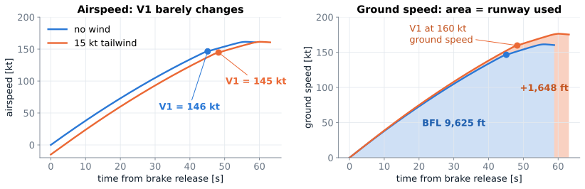

| no wind | 15 kt tail | |
|---|---|---|
| V1 (airspeed) | 146 kt | 145 kt |
| V1 ground speed | 146 kt | 160 kt |
| BFL | 9,625 ft | 11,273 ft |
| change | +1,648 ft | |
| (+17%) |
| x, h | distance along runway, height [ft] |
| V, Va | ground speed, airspeed [ft/s] |
| γ | flight-path angle (relative to the air) |
| uw(t) | headwind (+), tailwind (−) [ft/s] |
| T, D, L | thrust; drag, lift = q̄S·CD, q̄S·CL |
| W, m | weight; mass = W/g |
| μ, ρ, S | friction coeff., air density, wing area |
| Set to zero to start | |
| ε = 0 | thrust angle to the flight path (= α + engine incidence; a few deg, cos ε ≈ 1) |
| φ = 0 | runway slope (flat runway) |
| wg = 0 | vertical gust: along-runway wind only |